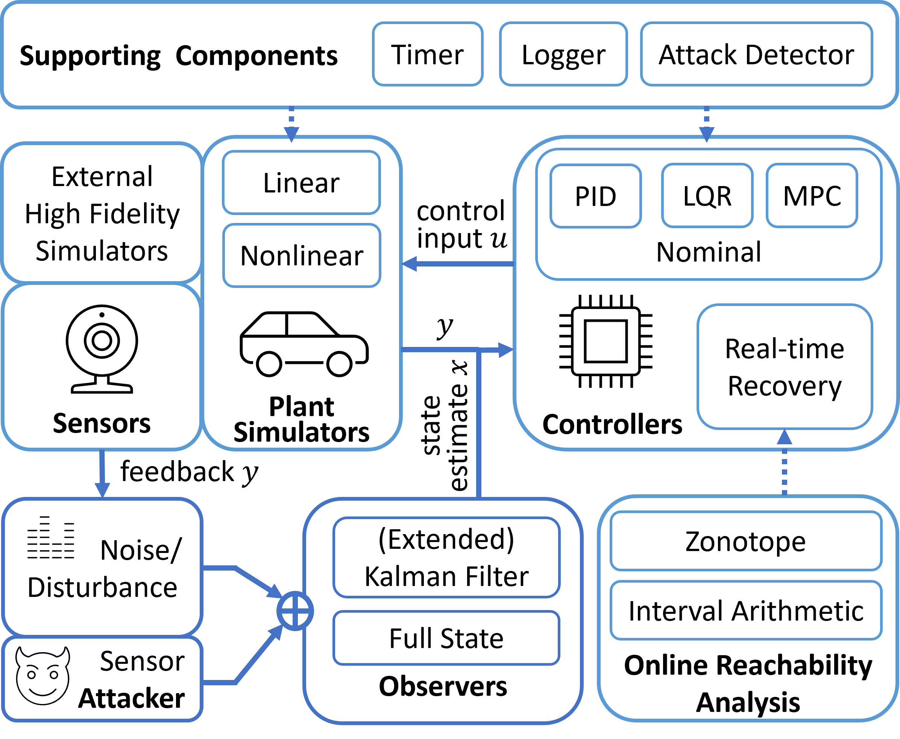

Introduction
Cyber-Physical Systems (CPS)
Cyber-physical systems (CPSs) seamlessly integrate computational resources and physical components with sensing and actuation. The integration expands the capability of these critical components and services in numerous domains, such as healthcare, aviation, transportation, and manufacturing. Despite the benefits, attacks targeted at CPSs can effortlessly cause severe consequences that damage economic interests, endanger personal safety, and disrupt social order.

Urgent needs to secure CPSs motivated many defense mechanisms. Attack detectors aim at identifying attacks at the earliest time, and attack recovery methods try to eliminate the impact caused by these attacks and even steer the system’s physical states to a target set. However, there are few solutions that help to evaluate the efficacy and efficiency of these security countermeasurements due to the following challenges: (i) tremendous efforts are required to collect benchmark plants, design controllers, customize attacks, build defense approaches, and evaluate these approaches. (ii) the existing solutions are difficult to add new features or integrate with existing simulators. (iii) besides cyber states, the physical behavior of systems also requires to be simulated.
To address these challenges, we develop a simulation and security toolbox with high extendibility and flexibility. One can easily switch between different experiment settings and apply defense prototypes responding to different attacks. The source code is available at our GitHub repository.
Overview of the toolboox
The proposed toolbox includes a CPS simulator and a set of security tools. As shown in the figure below, the simulator mimics the behavior of a CPS: Sensors measure system states and forward measurements to observers. Meanwhile, the measurements could suffer from external uncertainties and attacks to meet experiment needs. On the basis of them, the observers are responsible for providing state estimates for the controllers. Then, the controllers generate control input to be implemented in physical plants. Plant simulators update system states according to system dynamics and control input. To secure CPS, various attack detectors and real-time attack recovery controllers are included to respond to those attacks.
{kind=link}
Components of the toolbox
The toolbox includes the following components:
Plant simulators
The toolbox provides some out-of-the-box CPS benchmarks from different domains. Linear benchmarks are defined using state-space linear time-invariant (LTI) models, including the F16 fighting falcon, serial RLC circuit, motor speed, etc. Nonlinear benchmarks are defined by order differential equations (ODEs), including continuous stirred tank reactor, inverted pendulum, quadrotor, etc. It is simple to switch between all these benchmark plants with controllers by modifying the configuration file.
Controllers
The toolbox integrates common nominal controllers, such as PID, LQR, and MPC controllers. It is convenient to complete various control tasks, such as cruise control and lane keeping in an autonomous vehicle, using those nominal controllers with appropriate parameters. In addition, the toolbox also supports real-time attack-recovery controllers, which take over the system after identifying an attack. The controllers can generate a recovery control sequence that steers CPS’s physical states back to a target set after an attack. The recovery controllers rely on the formal method component.
Observers
Some controllers rely on state estimates calculated from sensor measurements by observers. The toolbox provides common observers, such as the Kalman filter for linear systems and extended Kalman filter for nonlinear systems. In most cases, we obtain the ground-truth states from the simulators directly, and the observers then become optional.
Online Reachability Analysis
Reachability analyses predict system’s reachable states, all possible physical states at subsequent control steps. If reachable states do not intersect with an unsafe set, the safety property must be satisfied. The toolbox contains efficient approaches to online reachability analysis. For linear systems, it leverages the properties of linear transformation of the zonotope and the support function method. For nonlinear systems, it uses interval arithmetic. In addition, the toolbox supports other formal representations, such as half-space and strip, to express unsafe and target state sets. Moreover, it also supports operations on Gaussian distributions to deal with stochastic systems.
Noise and Attacks
The toolbox simulates the ubiquitous noise or disturbance in real systems. The uncertainty may follow bounded uniform distributions, unbounded Gaussian distributions, etc. Besides, the toolbox simulates attacks that compromise the integrity or availability of sensor measurements, such as bias, replay, and delay attacks.
Supporting Components
The timer device simulates the system clock and activates control steps. The logger checkpoints historical data, such as the state estimate, sensor measurement, and control input, and prints the necessary debug information. The toolbox also reserves the interface for different attack detectors, such as CUSUM, chi-square.
Requirements and Customizability
The toolbox is implemented in Python 3, and thus can be installed in various operating systems with a Python environment. The main dependencies are scipy, numpy and cvxpy packages. Moreover, it is convenient to carry out secondary development because of two aspects:
High extendibility
The toolbox is written in a modular fashion, and each component is organized into a package. Thus, it is easy to extend its built-in functions or add new features. For example, users can add a new CPS according to their needs by modifying the system dynamics and controllers from the template file.
High flexibility
Besides numerical simulations, the toolbox can be easily deployed in common high-fidelity simulators, such as AirSim and CARLA. Also, it can be integrated into the Robot operating system (ROS), a set of open-source software libraries and tools for building robot applications. Thus, the toolbox is effortlessly deployed in real robots or CPS testbeds.